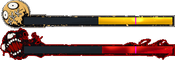
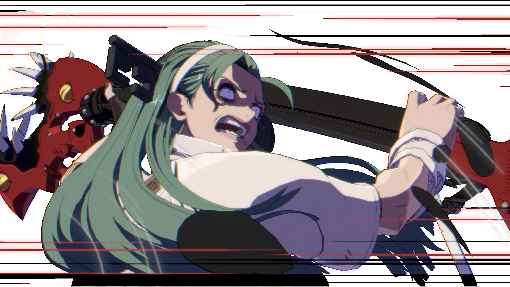
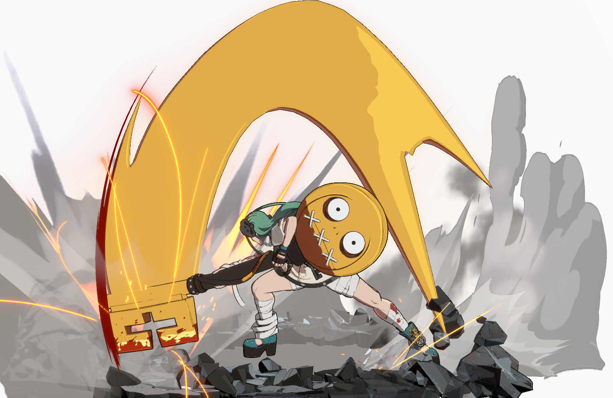

Lovingly latched on hormunculus
A.B.A. is what's commomly refered to as a "feast or famine" character. This essentially means that they're either really good or really bad. For A.B.A. this means the difference between her Normal Mode and her Jealous Rage, or Moroha Mode.
This gives A.B.A. a very unique playstyle as your goal is not only to deal damage, but also manage your gauge to stay in Jealous Rage for as long as possible.
Thankfully, she has a variety of differernt moves that help her in accomplishing that.
A.B.A.'s unique mechanic is something called jealous rage. An incredibly powerful stance regulated by something called the jealously gauge.
Jealousy Gauge
A.B.A. starts a match with the jealousy gauge halfway full. The gauge is then filled by hitting moves in which she uses Paracelsus (yes, the key has a name), those moves mainly being her Slash (S) and Heavy Slash (HS) moves.
When the gauge is above 25%, A.B.A can use either Changing and Swaying (62314P), Bonding and Dissolving (214H), or one of her Overdrives called The Law is Key, Key is King (632146H).
Changing and Swaying
Once in Jealous Rage, a majority of A.B.A.'s moves change, along with increased run speed, a better backdash and higher damage. But the meter will continuously drain while A.B.A is in this mode, eventually forcing her out of it when the gauge reaches 0. Before this happens, the player can use any of the previously mentioned moves to switch back to Normal Mode and recover a portion of the gauge, the exception being The Law is Key, Key is King (6321246H) which instead has a new cache-out mechanic in which the super deals more damage for each extra 25% left in the gauge when the move is used, emptying the gauge afterward in exchange.
The Law is Key, Key is King (Jealous Rage)
Like most characters, A.B.A. has two different overdrives, also know as supers.
The Law is Key, Key is King (632146H) is the first of A.B.A.'s overdrives, a powerful two hitting swing that will grant 25% to the gauge and put A.B.A. into her Jealous Rage mode on hit. Though it's an invincible reversal it is very unsafe on block.
Second hit of Overdrive